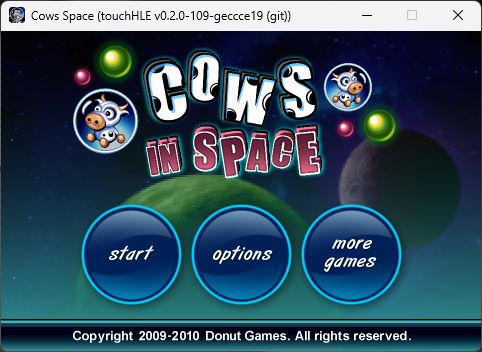
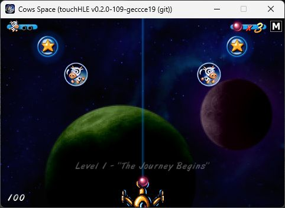

| App name | Cows in Space |
|---|---|
| Release year | 2009 |
| Developer/Publisher | Donut Games |
| First reported | |
| First reported by | @nighto |
| Version number | Display name | Bundle identifier | Minimum iOS version | Best rating | Last updated | First reported by | |
|---|---|---|---|---|---|---|---|
| 1.02 | Cows Space | com.donutgames.cowsinspace | 2.2.1 | ⭐️⭐️⭐️⭐️⭐️ | @nighto | ||
| 1.11 | Cows Space | com.donutgames.cowsinspace | 2.2.1 | ⭐️⭐️⭐️⭐️⭐️ | @nighto | ||
| 1.20 | Cows Space | com.donutgames.cowsinspace | 3.0 | ⭐️ | @nighto |
| Version number | touchHLE version | Operating system | GPU | Scale hack supported? | Rating | Reported | Reported by | Remarks | Screenshot |
|---|---|---|---|---|---|---|---|---|---|
| 1.20 | v0.2.1-82-gcf7b7a5 | Windows 11 | NVIDIA Quadro T2000 | Couldn't test | ⭐️ | @nighto | Crashes immediately with: Object 0x3000b580 (class "_touchHLE_NSString_Static", 0x3000b3f0) does not respond to selector "floatValue"!', src\objc\messages.rs:60:13 | ||
| 1.20 | v0.2.1 | Windows 11 | NVIDIA Quadro T2000 | Couldn't test | ⭐️ | @nighto | 'not implemented: Fat binary support is not implemented yet', src\mach_o.rs:234:17 | ||
| 1.11 | v0.2.0-109-geccce19 | Windows 11 | NVIDIA Quadro T2000 | Yes | ⭐️⭐️⭐️⭐️⭐️ | @nighto | View | ||
| 1.02 | v0.2.0-109-geccce19 | Windows 11 | NVIDIA Quadro T2000 | Yes | ⭐️⭐️⭐️⭐️⭐️ | @nighto | View |
| Rating | Description |
|---|---|
| ⭐️ | Completely broken: app crashes immediately without any user interaction. |
| ⭐️⭐️ | Only (part of) the main menu, intro or similar is working. |
| ⭐️⭐️⭐️ | Some of the main content of the app works, but with major issues. |
| ⭐️⭐️⭐️⭐️ | The main content of the app works (e.g. entire game is playable) with only small issues. |
| ⭐️⭐️⭐️⭐️⭐️ | Everything works. The app is fully usable. |

